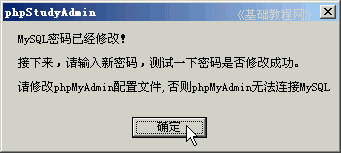
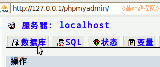

Discuz!论坛安装教程
作者：TeliuTe 来源：基础教程网
默认root管理员密码也是root，装好以后要修改一下，下面我们来看一个练习；
1、PhpStudy中修改
1）在桌面上双击 phpStudyAdmin 图标，右下角系统托盘出来一个图标；
2）瞄准图标点左键，在出来的菜单中选“MySQL 设置”；
3）在出来的窗口里，点字符集改成“gbk”的，以后安装dz也都用gbk的版本，点“确定”，提示重启后生效；
对应修改的是 my.ini 或 my.cnf 配置文件；
4）再点出这个面板，在下面的修改密码中输入原密码root，再输入自己的新密码，点“确定”；
5）出来一个提示，要求测试一下，点“确定”继续；

6）在出来的窗口里，输入刚才设置的新密码，然后按回车键；
7）如果正确，则会顺利进入 mysql 提示符，输入 exit 按回车键退出，密码修改完成；
2、在Ubuntu的XAMPP里
1）运行 xampp，在浏览器地址栏输入 127.0.0.1 按回车进入网站；
2）在左侧列表的工具中找到 phpMyAdmin，点击进入，这时候还没有设密码；
3）点上边的“数据库”，进入后找到 mysql 数据库，右边有个小人；

4）再点 mysql 右边的小人，检查这个数据库的权限；
5）在出来的用户列表中，点 root localhost 右边的小人，编辑权限 ；
6）再往下拉，直到找到更改密码，输入两遍新密码，点“执行”就修改了密码；
7）关闭浏览器重新进入，就需要输入密码了，如果出错刷新一下，也可以检查phpMyAdmin的配置文件 /opt/lampp/phpmyadmin/config.inc.php
把里面的验证改成 http：
/* Authentication type and info */
更多相关信息，请参阅：http://www.phpmyadmin.net/localized_docs/zh_CN/Documentation.html#authentication_modes
3、在终端里修改
1）打开终端，输入命令 /opt/lampp/bin/mysql -h localhost -u root -p
出来一行提示，要求输入密码，直接按回车，默认最初没密码，进入mysql命令行
2）在mysql命令行中，接着输入命令 SET PASSWORD = PASSWORD('mypsw');
两个单引号中间的mypsw就是新密码，按回车键提示成功，再输入quit 退出mysql；
3）以后提示密码的时候，盲打输入，屏幕上不会显示；
本节学习了修改mysql数据库密码的基本方法，如果你成功地完成了练习，请继续学习下一课内容；
本教程由86团学校TeliuTe制作|著作权所有
基础教程网：http://teliute.org/
美丽的校园……
转载和引用本站内容，请保留版权信息和本站链接。